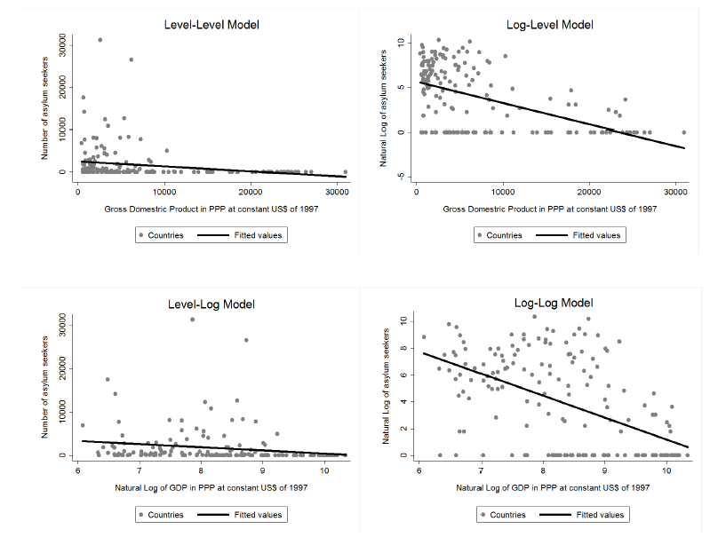
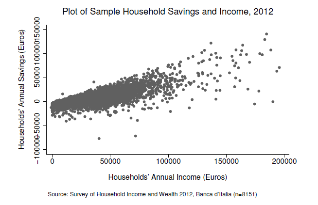

SLR
Paulo Fagandini
Nova SBE
Review
Review
- SLR
- Log transformations
Question 1.1
Question 1.1
Europe is in the midst of an unprecedented human migration with hundreds of thousands flocking to Europe’s shores. You want to study the root causes of this issue and decide to do some research.
- Write an equation that would allow you to test whether a country’s GDP has a linear influence in its number of asylum seekers.
- Can you say there is an exact linear relationship between both variables?
- Can you easily compute the population parameters for the regression model you presented before?
- What do you suggest then?
Question 1.2
Question 1.2
You move on with your endeavour and collect a set of cross-sectional data for 166 countries on their number of asylum seekers and GDP per capita in 1999 and estimate the following models by OLS:
Question 1.2

Question 1.2
- Level-level: \(\widehat{asylum}=2,569-0.12 GDP\) with \(n=166\) and \(R^2=0.0447\)
- Log-level : \(\widehat{log(asylum)}=5.64-0.0002 GDP\) with \(n=166\) and \(R^2=0.2585\)
- Level-log : \(\widehat{asylum}=7,804-731.97 log(GDP)\) with \(n=166\) and \(R^2=0.0368\)
- Log-log : \(\widehat{log(asylum)}=17.56-1.65 log(GDP)\) with \(n=166\) and \(R^2=0.2673\)
Question 1.2
- Interpret the coefficient on the regressor of each model.
Question 1.2
- Taking into account this econometric exercise alone can you say that higher GDP causes the number of asylum seekers to decrease?
- You happen to read in a newspaper the following sentence: “The asylum migration flows are determined by economic incentives alone.” Does the \(R^2\) of any of the fitted models provide evidence in favour of this claim?
- What can you conclude when you compare the quality of adjustment of the four regressions?
- Intuitively, what do you point out as the main limitations of these models?
Question 1.5
Consider the savings function:
\[sav=\beta_0 + \beta_1 inc + u\] Where \(u=e\sqrt{inc}\) with \(E[e]=0\) and \(V[e]=\sigma_e^2\). Furthermore, \(e\) and \(inc\) are independent.
Question 1.5
- Show that \(E[u|inc] = 0\), so that the key zero conditional mean assumption (SLR.4) is satisfied. [Hint: If \(e\) is independent of \(inc\), then \(E[e|inc] = E[e]\)].
- Suppose now that \(E[u] = \alpha \neq 0\). Show that the model can always be rewritten with the same slope, but a new intercept and error, where the new error has a zero expected value.
- Show that \(V[u|inc] = \sigma_e^2 inc\), so that homoskedasticity (SLR.5) is violated. In particular, the variance of \(sav\) increases with \(inc\). [Hint: \(V[e|inc] = V[e]\), if \(e\) and \(inc\) are independent.]
Question 1.5
- Provide a discussion that supports the assumption that the variance of savings increases with family income. Do you find evidence of that in the graph below?


Econometrics